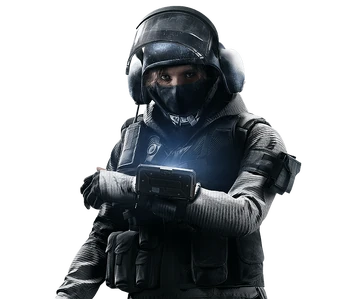

Monika "IQ" Weiss


...
Weiss' mother is a renowned mathematician and her father
is an inventor whose high academic standards encouraged
Weiss and her siblings to win numerous awards in math,
science, and music throughout their school years.
Thriving in the gifted program enabled Weiss to complete
her first internship with a local tech company at the age
of sixteen. She was invited to MIT, where she focused on
electrical engineering, achieving accolades for her research
in Microelectronics. Weiss then joined Caltech for graduate
studies in experimental electrical engineering. Weiss returned
to Germany after traveling the world for a year to work with
military technology research before joining the Bundespolizei
(BPOL) as an officer. Both the physical and mental challenges
of the job appealed to Weiss and she quickly moves through the
ranks. After two years with the BPOL, she was recruited by the GSG 9.
Gameplay Description
A Light Health Operator, IQ's unique gadget is the RED Mk III "Spectre", which can
locate any electronic device in the immediate vicinity.
Device Description
Uses the Electronics Detector to locate any electronics in range through obstacles such as walls.
The advent of complex electronics on battlefields has created a pressing need for
more advanced types of portable, ground-based sensors. Inspired by Forward Looking
Infrared technology, the RED Mk III “Spectre” displays any active electronic components
in the immediate vicinity of the user, from IEDs to various types of specialized military gear.
Weiss designed the prototype for the RED Mk I while a Ph.D. candidate at CalTech.
She has maintained a firm hand in monitoring the subsequent models of the device,
as dictated in her licensing agreement with the manufacturer.